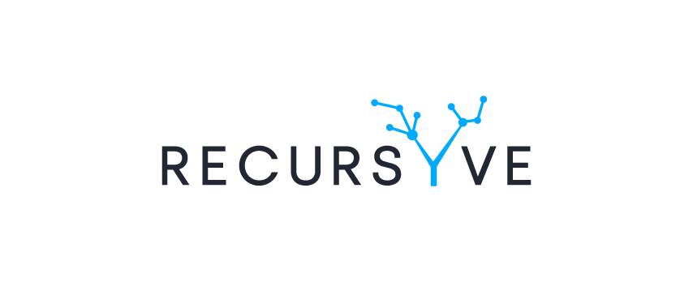

<div class="navbar-header white">
    <div class="logo">
        
    </div>
    <button mat-icon-button class="toggle-sidebar-folded" (click)="toggleSidebarFolded()" fxHide.lt-lg>
        <mat-icon>menu</mat-icon>
    </button>

    <button mat-icon-button class="toggle-sidebar-opened" (click)="toggleSidebarOpened()" fxHide.gt-md>
        <mat-icon>arrow_back</mat-icon>
    </button>
</div>

<div class="navbar-content white">
    <nice-navigation class="material2" layout="vertical"></nice-navigation>
</div>
